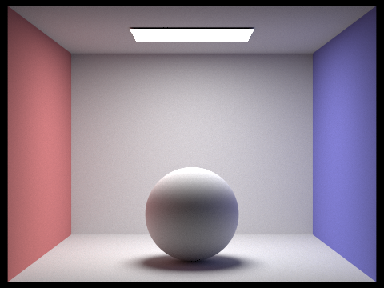
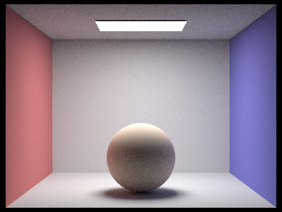
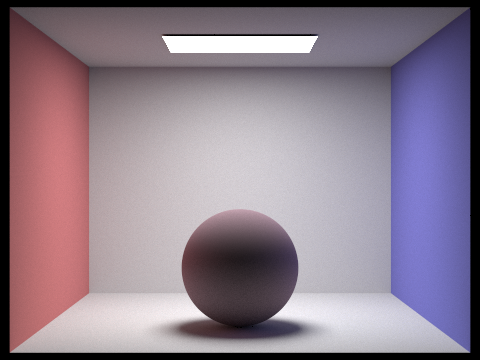
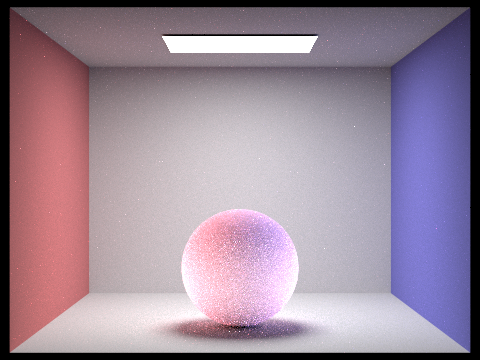
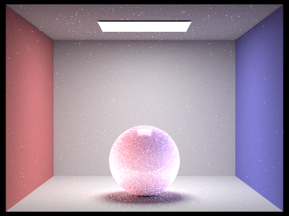
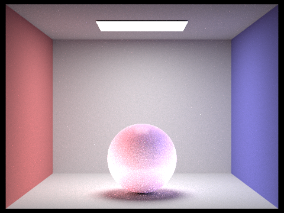

CS184/284A Spring 2026 Final Project Milestone
Lip Service: Pathtracing Viscous Dielectrics
Names: Andrea Dao, Jade Wang, Tunmise Akanle, David Smith
Link to webpage:
https://cal-cs184-student.github.io/hw-webpages-jadewang26/hw3/index.html
Link to GitHub repository:
https://github.com/jadewang26/184-final-proj-lipgloss
Overview
We aim to implement a layered BSDF into our pathtracer with a base layer for skin (lips) and a dielectric layer for the gloss. We will also make sure there are three adjustable parameters: one for dielectric roughness to adjust the shine/glossiness, one for thickness to adjust the viscosity, and one for color/saturation.
|

Original BRDF with Lambertian material (sphere)
|

BSSRDF layer (sphere)
|
|

First Iteration of Layered BRDF (sphere)
|

Second Iteration of Layered BRDF (sphere)
|
|

Third Iteration of Layered BRDF (sphere)
|

Fourth Iteration of Layered BRDF (sphere)
|